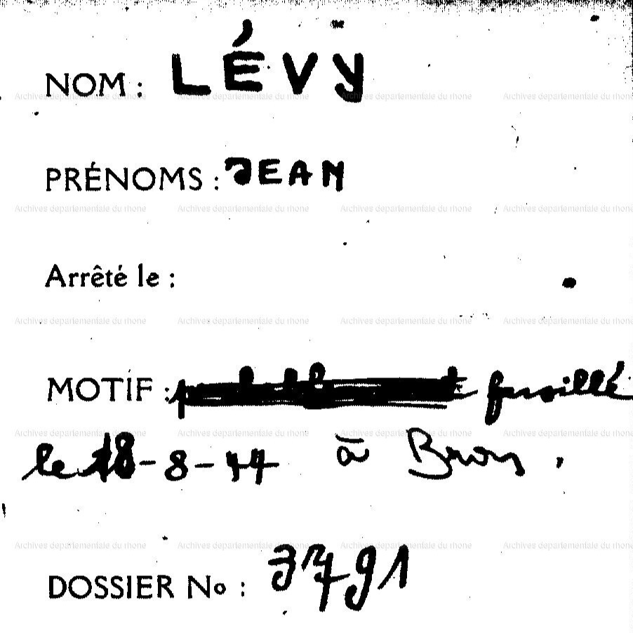

Portrait d’archive
Jean Lévy (F)
Jean LEVY (F)
Jean LEVY est né le 19/05/1928 à Mulhouse en France.
Il est fusillé à Bron le 17/08/1944. Il avait 16 ans.
Photographe au service des fabrications dans l'industrie.
Nom : LEVY
Prénom(s) : Jean
Date naissance : 19/05/1928
Âge (ans) : 16
Lieu naissance : Mulhouse
Pays ou département : Haut-Rhin
Lieu rassemblement : Bron
Dernière adresse : 14 rue de la Levée
Ville : Saint-Laurent-les-Macon (Saint-Laurent-sur-Saône)
Code postal : 01370
Fusillé à Bron
Date d’exécution : 12/08/1944
Informations diverses : Fils d’Alfred Mathieu dit Freddy Lévy, représentant de commerce, (14 oct 1892, Reguisheim, Haut-Rhin) et de Lucie née Ebstein. Il était photographe. Le 13 août 1944, à Saint-Laurent-lès-Mâcon, Jean Lévy, son père Alfred Lévy et son cousin Raymond Benjamin Buchsbaum (10/08/1927, Mulhouse, Haut-Rhin) furent arrêtés lors d’une rafle organisée par la Gestapo et la Milice. Interné à la prison Montluc. Le 17 août, 50 prisonniers, parmi lesquels Jean Lévy, Raymond Buchsbaum et Alfred Lévy, furent exécutés par balles. Leurs corps furent ensuite recouverts de terre et de gravats. (Source: Maitron). Jean et son père Alfred Lévy furent inhumés au cimetière de Bron. Le corps de Raymond Buchsbaum fut inhumé à Bron puis exhumé le 24 mai 1945 pour être enterré au cimetière israélite de Lyon (La Mouche 69007).
Fusillé